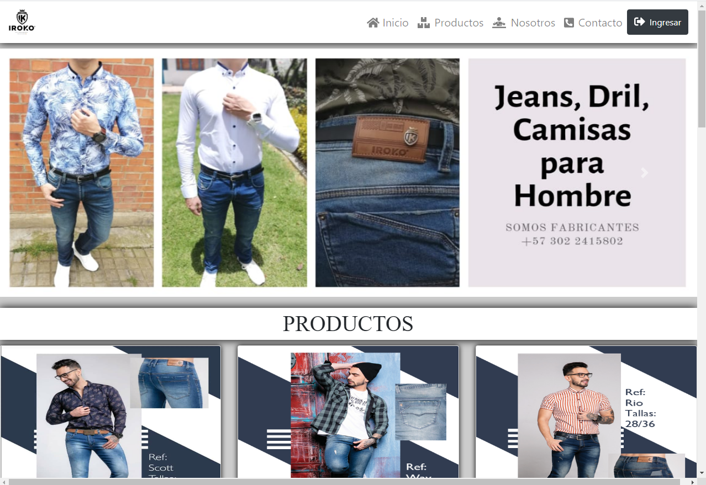

Diseñador y programador Web
Mi nombre es Argenis Jose Rangel soy el creador de (A.J) Argenis Jose. Marca personal y creador de diferentes contenidos Web con una trayectoria de más de cinco años desarrollando y diseñando sitios Web. Día a día aprendiendo las nuevas técnicas y tecnologías relacionadas al desarrollo web Interactivos.
Entre mis habilidades más destacadas en el ámbito del desarrollo Web se encuentran:
- HTML5
- CSS3
- PHP(intermedio)
- JavaScript
- Java Web (intermedio)
Programador web
El desarrollo web es uno de los sectores mejor pagados para las personas que recién comienzan sus carreras. Entonces, si quieres crear un sitio web para ti o comenzar tu viaje como un programador web altamente rentable, debes comenzar en algún lugar. Te decimos cómo ser programador web, desde por dónde empezar hasta qué lenguajes aprender primero.
El desarrollo web tiene un amplio espectro, por lo que antes de comenzar, es buena idea tener un objetivo claro en mente.
Tus objetivos pueden ir desde cambiar de carrera hasta abrir un ecommerce personal. O simplemente programar para amigos o por diversión. Sea cual sea tu objetivo, asegúrate de entender lo que estás haciendo y por qué lo estás haciendo. El desarrollo web comprende muchas ramas de trabajo más pequeñas, tener un objetivo claro te ayudará a decidir qué aprender primero y qué omitir.
Un buen lugar para comenzar serían las plataformas de aprendizaje en línea como BitDegree. Esta ofrece una amplia gama de cursos para el desarrollo web, pero es mejor comenzar desde el principio. Y el comienzo debería implicar una elección entre desarrollo de back-end o front-end.
Proyecto web en java
Este proyecto está construido en java web. Un sistema de información creado a partir de las bases y conocimientos adquiridos en el SENA.
SIME “Sistema de Información Micro empresarial”. EL sistema tiene como finalidad mejorar los diferentes procesos internos como lo son administrar personal tales como los empleados proveedores, generar reportes de cada uno de los módulos, categorizar cada prenda y llevar un control en todos los procesos internos de la empresa Iroko Jeans.
Objetivo General: Desarrollar un sistema de información que permita mejorar y facilitar los procesos de venta, producción, y atención al cliente.
Planteamiento del problema: IROKO JEANS, es una empresa textil ubicada en la ciudad de Bogotá dedicada a la fabricación de pantalones. La empresa presenta dificultades en los procesos de control de materia prima, categorización de producto finalizado, gestiona miento de pedidos y registro de clientes, dando como consecuencia el cruzamiento de mercancías, extravío de materia prima, pérdidas económicas, retrasos de envíos y descontento de clientes.